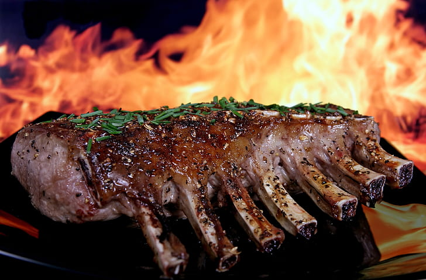

Odin's Famous Ribs

Recipe Description
This is a recipe for amazing BBQ ribs smoked by the All-Father himself.
He picked this version up on a trip he took to Alabama in the seventies.
It is known to being far superior to literally any BBQ ever produced
anywhere else on the planet.
These ribs are smoky, sweet, and savory all in just the right amounts. They
combine slow-cooking technique with a generous application of spices
to bring out the flavors inherent to slow-smoked meat. Served daily to
dead Vikings in Valhala!
Ingredients
- 1 Rack of St. Louis Cut Pork Ribs
- 1/4 cup Finely ground dried garlic clove
- 1/4 cup Freshly cracked back peppercorns
- 1/4 cup Himalayan Salt, coursely pummeled
- 1 cup Odin's Secret Wolf's Head BBQ Rub
- 2 cups Thor's Signature Lightning Bolt BBQ Sauce
- 1 Qt Jug filled 1:1 with water and apple cider vinegar
- 1 stick of unsalted butter
- 1 roll heavy duty foil wrap
Preparation Steps
- Load smoker with hickory wood and bring to 250 Degrees Fahrenheit
- Prepare ribs by trimming unwanted fat and silver-skin
- Pat excess moisture dry with a wet paper towel
- Mix Salt, Pepper, and vinegar thoroughly
- Generously apply Salt, Pepper, Vinegar mixture to all sides of ribs
- Let sit 15 minutes
- Generously apply Odin's Wolf's Head Rub to all sides of ribs
- Once smoker is up to temperature, place ribs directly on rack, bone side down
- Let ribs smoke for 2 hours, spritzing with water-vinegar mixture every 30 minutes
-
During this time, tear off 2 sheets of foil roughly 26 inches in length and lay on
top of one another on a countter
- drizzle 1/4 cup BBQ suace in a roughly 16 inch line centered along foil
- section butter into half-inch pads and place along sauce line
-
At the end of 2 hours remove ribs from smoker and place on foil, meat side down
directly on sauce/butter line.
- Wrap the ribs until they are fully enclosed but easy to acccess
-
Return ribs to smoker for 1 hour. Check the internal temperature at the end of the hour.
Remove once temperature hits 198 Degrees Fahrenheit
-
Unwrap and drain ribs then flip them over, keeping them on the foil (Just leave the foil
open on top
- Baste/Slather the ribs in Thor's BBQ Sauce and lightly dust with more Odin's Rub
- Return ribs to smoker for 15 minutes
- Remove ribs and rest them 15 minutes, then slice and serve